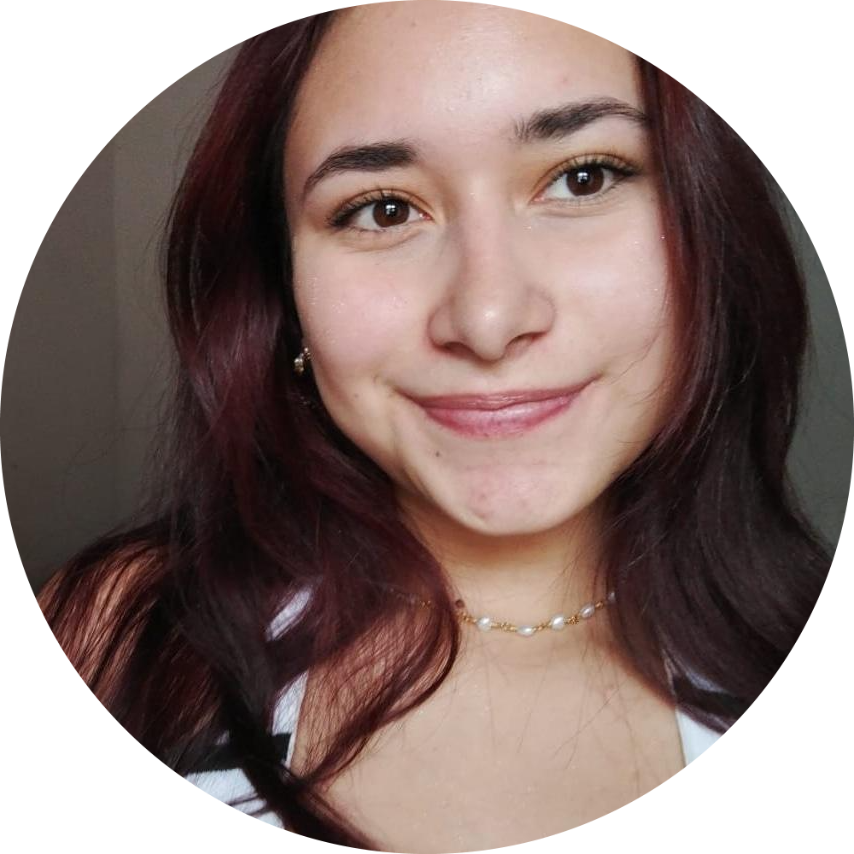

María Fernanda Gámez Murillo
Actualmente soy Estudiante de programación en Campuslands Bucaramanga, graduada con honores a mejor bachiller de la Institución Educativa Sergio Camargo promoción 2023 en la modalidad de Ciencias Naturales. Destaco mis habilidades en el trabajo en equipo y resolución de problemas.
Numero de Contacto
.svg) 3193494313
3193494313
.svg) instagram
instagram.png) github
github.png) linkedin
linkedinFormación Académica
Educación Media
Institución Educativa Sergio Camargo
2023
Certificado Nivel Ingles C1
Universidad Nacional Abierta y a Distancia
2022
Desarrollo Software
Campuslands Bucaramanga
Actualidad
Proyectos
Metodo Compostaje Pacas Digestoras Silva en las Veredas del Municipio de Mirafores, 2023
30 Noviembre 2023
Institución Educativa Sergio Camargo, Miraflores
Proyecto ambiental que consiste en la creación de bloques compactados de tierra, residuos organicos y hojas secas. Esta mezcla da como resultado abono al pasar por un proceso de descomposición anaerobia. El principal objetivo es lograr mitigar la contaminación de las tierras causada por los lixiviados y los vectores
Idiomas
Español
Idioma Nativo
Ingles
Nivel de Lectura: B2
Nivel de Escritura: B2
Nivel de Comunicación: B2
Stacks
Stack
Backend
Lenguaje
Python
Logros
Desarrollo de diferentes programas con dificultad Básica, Media y Avanzada durante el trascurso de estudio en Campuslands